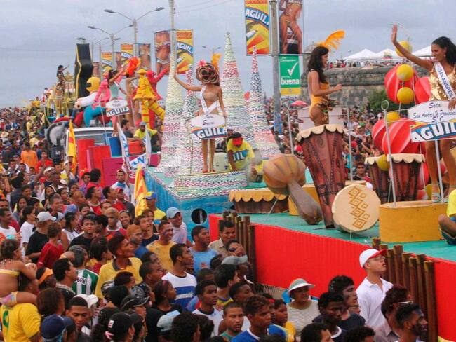

Descubre Bolívar
/*Bolívar es un departamento lleno de historia, cultura y playas paradisíacas. Su capital, Cartagena de Indias, es Patrimonio de la Humanidad y uno de los destinos turísticos más importantes de Colombia, reconocida por sus murallas, calles coloniales y el imponente Castillo de San Felipe de Barajas.
Entre sus celebraciones más destacadas se encuentran las Fiestas de Independencia, que se realizan cada noviembre para conmemorar la libertad de la ciudad. Este evento llena las calles de color, música y alegría con desfiles, muestras folclóricas y celebraciones culturales que reflejan el espíritu caribeño. Durante estas fiestas se vive la tradicional Noche de Candela, una jornada nocturna de bailes, comparsas y desfiles, así como Ángeles Somos, una costumbre en la que los niños recorren los barrios recolectando ingredientes para un gran sancocho comunitario, símbolo de unión y fraternidad entre los habitantes.
En A&G TOURS ofrecemos transporte turístico y empresarial para quienes deseen explorar Cartagena, sus islas cercanas como Barú y el archipiélago del Rosario, así como pueblos tradicionales que muestran la riqueza cultural de la región. Nuestro compromiso es brindar viajes cómodos, seguros y organizados, para que descubras lo mejor de Bolívar y vivas experiencias inolvidables en el Caribe colombiano.
Fiestas de Independencia
Las Fiestas de Independencia se celebran cada noviembre para conmemorar la independencia de la ciudad. Son el evento más importante del año, con desfiles, eventos folclóricos y celebraciones culturales que llenan las calles de color y alegría. Durante estas fiestas también se realiza la Noche de Candela, un evento nocturno con desfiles de grupos folclóricos, música y bailes junto a las candidatas al reinado popular. Además, se vive la tradicional celebración de Ángeles Somos, en la que los niños recorren los barrios recolectando ingredientes para preparar un gran sancocho comunitario, símbolo de unión y fraternidad entre los habitantes.
Castillo de San Felipe de Barajas
El Castillo de San Felipe de Barajas domina Cartagena desde su posición estratégica y es una de las mayores obras de la ingeniería militar colonial del siglo XVII. Construido por los españoles para proteger la ciudad de los ataques de piratas y potencias extranjeras, esta fortaleza se ha convertido en un símbolo de resistencia y orgullo histórico. Sus túneles subterráneos, murallas y pasadizos secretos revelan las estrategias defensivas que marcaron el pasado de la ciudad. Desde su cima, los visitantes disfrutan de una vista panorámica impresionante de la bahía y del centro histórico. Hoy en día, el castillo es uno de los lugares más visitados de Colombia y Patrimonio de la Humanidad.
Islas del Rosario
El archipiélago de las Islas del Rosario es un conjunto de islas coralinas protegidas, hogar de uno de los arrecifes más importantes del Caribe colombiano. Perfectas para el buceo, snorkel y la observación de fauna marina en su entorno natural.
Parque de Bolívar
El Parque de Bolívar (o Plaza de Bolívar) en el centro histórico de Cartagena es un símbolo cultural y de encuentro. Rodeado por edificios históricos como el Museo del Oro Zenú, la catedral y el Palacio de la Inquisición, es un espacio simbólico lleno de historia urbana.
Santa Cruz de Mompox
Santa Cruz de Mompox, Patrimonio de la Humanidad, es una joya colonial a orillas del río Magdalena. Sus calles empedradas, iglesias históricas y tradición orfebre en filigrana lo convierten en un destino cultural único en el departamento de Bolívar.
San Basilio de Palenque
San Basilio de Palenque es el primer pueblo libre de América y Patrimonio Cultural e Inmaterial de la Humanidad por la UNESCO. Conserva su lengua criolla, música, danzas y tradiciones únicas, siendo un destino imprescindible para quienes desean conocer la raíz afrocolombiana en Bolívar.
Playas de Barú
A minutos de Cartagena, las Playas de Barú como Playa Blanca, Cholón y Agua Azul ofrecen aguas cristalinas, arenas blancas y tranquilidad caribeña. Son un refugio ideal para relajarse, disfrutar del mar y degustar sabores típicos frente al horizonte azul del Caribe colombiano.

Volcán del Totumo
El Volcán del Totumo es una de las experiencias más curiosas y divertidas de Bolívar. Este pequeño volcán de lodo medicinal se encuentra cerca de Santa Catalina, a una hora de Cartagena. Los visitantes pueden sumergirse en su interior para disfrutar de un baño natural lleno de minerales, ideal para la piel. Luego, se enjuagan en la laguna cercana, completando una experiencia única y relajante.
¡Contáctanos!